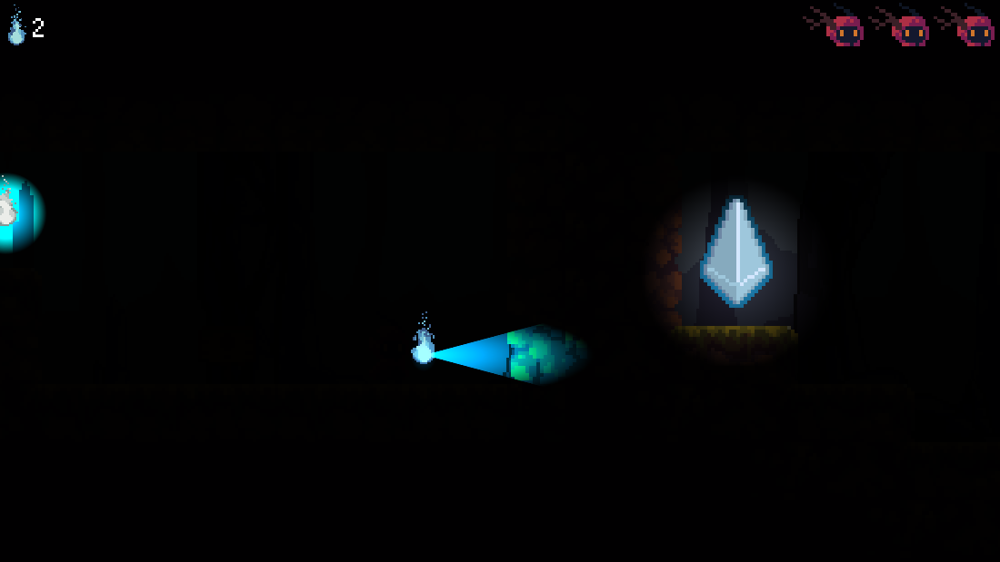
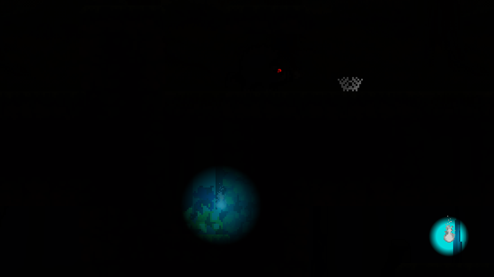
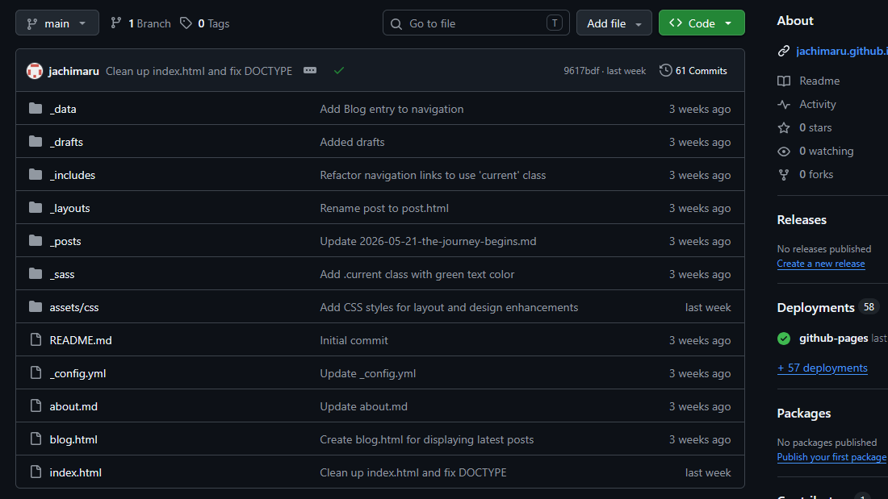

Jinho Yun - Dev Site
About Me
Welcome to my site! My name is Jacob, but I typically go by Jinho Yun online, and I'm a newbie programmer. Currently, I have very little experience in coding. Part of the reason for this site is to document my journey from going to zero coding experience to, hopefully, a career in it. This site, as you can see below, is also a place to put my projects as I learn and grow.
Interests:
- Art: I typically just do art digitally these days. My go-to programs for art are Clip Studio for drawing, GIMP for editing images, and Aseprite for sprite work. I've also used MS Paint to edit sprites, specifically for recoloring.
- Game Development: I've been a hobbyist game dev since about 2006/2007, starting with RPG Maker 2003. I've messed with every iteration of RPG Maker (even the Playstation and DS versions) up to RPG Maker MV. Most recently, I've been dabbling in Godot and that's the engine I'll likely be using going forward.
- Tabletop Gaming: Not just board games, which I play plenty of, but also TTRPGs like Dungeons and Dragons. I've been my friend group's "forever DM" essentially since I started playing.
Most Recent Project
Lightbringer
A 2D pixel art platformer using light as its main mechanic.



Most Recent Post
Setting Up My Dev Environment
06/06/2026
This week's blog post is focused on Module 0, Setup and Tooling. In this module, I downloaded Visual Studio Code and set up my GitHub. Part of that was learning how to create repositories, make commits, and push those commits to GitHub.
